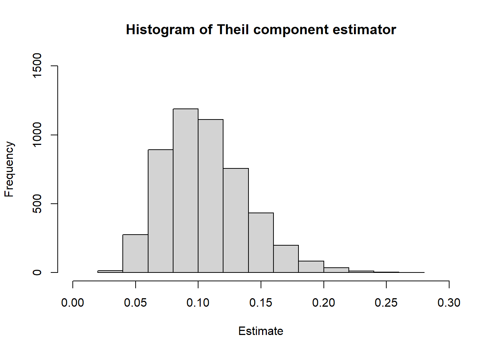

✔️ time to exit poverty interpretation: watts score divided by a growth rate
✔️ sensitive to intensity and inequality among the poor
✔️ can be decomposed into interpretable measures
❌ not defined for individuals with zero or negative incomes
❌ interpretation is not very straightforward
❌ less common than the FGT measures nowadaysThe measure proposed in Watts (1968Watts, Harold W. 1968. “An Economic Definition of Poverty.” Discussion Papers 5. Institute For Research on Poverty. https://www.irp.wisc.edu/publications/dps/pdfs/dp568.pdf.) satisfies a number of desirable poverty measurement axioms and is known to be one of the first distribution-sensitive poverty measures, as noted by Haughton and Khandker (2009Haughton, Jonathan, and Shahidur Khandker. 2009. Handbook on Poverty and Inequality. World Bank Training Series. World Bank Publications. https://openknowledge.worldbank.org/bitstream/handle/10986/11985/9780821376133.pdf.). It is defined as:
\[ Watts = \frac{1}{N} \sum_{i \in U} \log{ \bigg( \frac{y_i}{\theta} \bigg) \delta ( y_i \leqslant \theta) }. \]
Morduch (1998Morduch, Jonathan. 1998. “Poverty, Economic Growth, and Average Exit Time.” Economics Letters 59 (3): 385–90. https://doi.org/10.1016/S0165-1765(98)00070-6.) points out that the Watts poverty index can provide an estimate of the expected time to exit poverty. Given the expected growth rate of income per capita among the poor, \(g\), the expected time taken to exit poverty \(T_\theta\) would be:
\[ T_\theta = \frac{Watts}{g}. \]
The Watts poverty index also has interesting decomposition properties. Blackburn (1989Blackburn, McKinley L. 1989. “Poverty Measurement: An Index Related to a Theil Measure of Inequality.” Journal of Business & Economic Statistics 7 (4): 475–81. https://doi.org/10.1080/07350015.1989.10509760.) proposed a decomposition for the Watts poverty index, rewriting it in terms of the headcount ratio, the Watts poverty gap ratio and the mean log deviaton of poor incomes3 The mean log deviation (also known as Theil-L or Bourguignon-Theil index) is an inequality measure of the generalized entropy class. The family of generalized entropy indices is discussed in the next chapter.. Mathematically,
\[ Watts = FGT_0 \big( I_w + L_* \big) \]
where \(I_w = \log(\theta/\mu_*)\) is the Watts poverty gap ratio4 \(\mu_*\) stands for the average income among the poor. and \(L_*\) is the mean log deviation of incomes among the poor. This can be estimated using the svywattsdec function.
This result can also be interpreted as a decomposition of the time taken to exit poverty, since
\[ \begin{aligned} T_\theta &= \frac{Watts}{g} \\ &= \frac{FGT_0}{g} \big( I_w + L_* \big) \end{aligned} \]
As Morduch (1998Morduch, Jonathan. 1998. “Poverty, Economic Growth, and Average Exit Time.” Economics Letters 59 (3): 385–90. https://doi.org/10.1016/S0165-1765(98)00070-6.) points out, if the income among the poor is equally distributed (i.e., \(L_*=0\)), the time taken to exit poverty is simply \(FGT_0 I_w / g\). Therefore, \(FGT_0 L_* / g\) can be seen as the additional time needed to exit poverty as a result of the inequality among the poor.
To provide a example for our code, we proceed with a Monte Carlo experiment.
Using the eusilcP data from the simPop package (Templ et al. 2017Templ, Matthias, Bernhard Meindl, Alexander Kowarik, and Olivier Dupriez. 2017. “Simulation of Synthetic Complex Data: The R Package simPop.” Journal of Statistical Software 79 (10): 1–38. https://doi.org/10.18637/jss.v079.i10.), we can compute the actual value of the Watts index for that population:
# load libraries
library(sampling)
library(survey)
library(convey)
library(parallel)
# load pseudo population data
data("eusilcP" , package = "simPop")
# compute population value of the Watts index decomposition
inc.pos <- eusilcP$eqIncome[eusilcP$eqIncome > 0]
(theta.pop <-
mean(ifelse(inc.pos <= 10000 , log(10000 / inc.pos) , 0) , na.rm = TRUE))## [1] 0.05025374Now, to study the distribution of the estimator under a particular sampling design, we select 5000 samples under one-stage cluster sampling of 100 households using the cluster function from the sampling package (Tillé and Matei 2021Tillé, Yves, and Alina Matei. 2021. Sampling: Survey Sampling. https://CRAN.R-project.org/package=sampling.), and use the svywatts function to estimate the Watts index for each of those samples:
# define the number of monte carlo replicates
mc.rep <- 5000L
# simulation function
watts_sim_fun <- function(this.iter) {
set.seed(this.iter)
library(survey)
library(convey)
library(sampling)
# load pseudo population data
data("eusilcP" , package = "simPop")
# compute size-like variable for PPS sampling design
eusilcP$aux <-
log(ifelse(eusilcP$eqIncome >= 1000 , eusilcP$eqIncome , 1000))
# select sample
tt <-
sampling::cluster(
data = eusilcP[sample.int(nrow(eusilcP) , nrow(eusilcP) , replace = FALSE) ,] ,
clustername = "hid" ,
size = 1000L ,
method = "systematic" ,
pik = eusilcP$aux
)
# collect data
this.sample <- getdata(eusilcP , tt)
# create survey design object
this.desobj <-
svydesign(
ids = ~ hid ,
probs = ~ Prob ,
data = this.sample ,
nest = FALSE
)
# prepare for convey functions
this.desobj <- convey_prep(this.desobj)
# filter positive incomes
this.desobj <- subset(this.desobj , eqIncome > 0)
# compute estimates
svywatts( ~ eqIncome , this.desobj , abs_thresh = 10000)
}
# run replications
cl <- makeCluster(detectCores() - 1)
watts.estimate.list <-
clusterApply(cl, seq_len(mc.rep) , watts_sim_fun)
stopCluster(cl)Then, we evaluate the Percentage Relative Bias (PRB) of the Watts index estimator. Under this scenario, the PRB of the Watts index estimator is 0.3772%.
# estimate the expected value of the Watts index estimator
# using the average of the estimates
(theta.exp <- mean(sapply(watts.estimate.list , coef)))## [1] 0.05044329# estimate the percentage relative bias
(percentage_relative_bias <- 100 * (theta.exp / theta.pop - 1) )## [1] 0.377195For the variance estimator, we have:
# estimate the variance of the Watts index estimator
# using the empirical variance of the estimates
(vartheta.popest <- var(sapply(watts.estimate.list , coef)))## [1] 6.141434e-05# estimate the expected value of the Watts index variance estimator
# using the (estimated) expected value of the variance estimates
(vartheta.exp <- mean(sapply(watts.estimate.list , vcov)))## [1] 6.100902e-05# estimate the percentage relative bias of the variance estimator
(percentage_relative_bias_variance <- 100 * (vartheta.exp / vartheta.popest - 1))## [1] -0.6599717Under this scenario, the PRB of the Watts index variance estimator is -0.6600%.
Our simulations show that the Squared Bias of this estimator accounts for less than 0.1% of its Mean Squared Error:
theta.bias2 <- (theta.exp - theta.pop) ^ 2
theta.mse <- theta.bias2 + vartheta.popest
(squared_bias_over_mse <- 100 * (theta.bias2 / theta.mse))## [1] 0.05847158Next, we evaluate the Percentage Coverage Rate (PCR). In theory, under repeated sampling, the estimated 95% CIs should cover the population parameter approximately 95% of the time. We can evaluate that using:
# estimate confidence intervals of the Watts index
# for each of the samples
est.coverage <-
sapply(watts.estimate.list, function(this.stat)
confint(this.stat)[, 1] <= theta.pop &
confint(this.stat)[, 2] >= theta.pop)
# evaluate empirical coverage
(empirical_coverage <- mean(est.coverage))## [1] 0.9268Our coverages are not too far from the nominal coverage level of 95%.
For the Watts index decomposition, we start by computing the (true) population values of the components:
# compute population value of the Watts index decomposition
inc.pos <- eusilcP$eqIncome[eusilcP$eqIncome > 0]
wdec1 <-
mean(ifelse(inc.pos <= 10000 , log(10000 / inc.pos) , 0) , na.rm = TRUE)
wdec2 <- mean(inc.pos <= 10000 , na.rm = TRUE)
mu.poor <- mean(inc.pos [inc.pos <= 10000])
wdec3 <- log(10000 / mu.poor)
wdec4 <-
-mean(log(inc.pos[inc.pos <= 10000] / mu.poor) , na.rm = TRUE)
theta.pop <-
c(
"watts" = wdec1 ,
"fgt0" = wdec2 ,
"watts pov. gap ratio" = wdec3 ,
"theil(poor)" = wdec4
)
theta.pop## watts fgt0 watts pov. gap ratio
## 0.05025374 0.11399096 0.33497664
## theil(poor)
## 0.10588056Then, using the same sampling strategy of the svywatts, we compute the svywattsdec for each sample:
# simulation function
wattsdec_sim_fun <- function(this.iter) {
set.seed(this.iter)
library(survey)
library(convey)
library(sampling)
# load pseudo population data
data("eusilcP" , package = "simPop")
# compute size-like variable for PPS sampling design
eusilcP$aux <-
log(ifelse(eusilcP$eqIncome >= 1000 , eusilcP$eqIncome , 1000))
# select sample
tt <-
sampling::cluster(
data = eusilcP[sample.int(nrow(eusilcP) , nrow(eusilcP) , replace = FALSE) , ] ,
clustername = "hid" ,
size = 1000L ,
method = "systematic" ,
pik = eusilcP$aux
)
# collect data
this.sample <- getdata(eusilcP , tt)
# create survey design object
this.desobj <-
svydesign(
ids = ~ hid ,
probs = ~ Prob ,
data = this.sample ,
nest = FALSE
)
# prepare for convey functions
this.desobj <- convey_prep(this.desobj)
# filter positive incomes
this.desobj <- subset(this.desobj , eqIncome > 0)
# compute estimates
svywattsdec(~ eqIncome , this.desobj , abs_thresh = 10000)
}
# run replications
cl <- makeCluster(detectCores() - 1)
wattsdec.estimate.list <-
clusterApply(cl, seq_len(mc.rep) , wattsdec_sim_fun)
stopCluster(cl)The PRB of each component is estimated using the code below. Notice that PRBs are relatively small, with absolute values below 1%, with the largest bias in the Theil index component.
## watts fgt0 watts pov. gap ratio
## 0.05025374 0.11399096 0.33497664
## theil(poor)
## 0.10588056# estimate the expected values of the components estimators
# using the average of the estimates
(theta.exp <- rowMeans(sapply(wattsdec.estimate.list , coef)))## watts fgt0 watts pov. gap ratio
## 0.05044329 0.11418992 0.33584759
## theil(poor)
## 0.10584416# estimate the percentage relative bias
(percentage_relative_bias <- 100 * (theta.exp / theta.pop - 1))## watts fgt0 watts pov. gap ratio
## 0.37719501 0.17453750 0.26000223
## theil(poor)
## -0.03437576For the variance estimators, we estimate the PRB using the code below. Note that the bias of the variance estimators is still relatively small, with absolute value of the Watts variance estimator’s PRB below 1% and all four components variance estimators below 5%.
# estimate the variance of the components estimators
# using the empirical variance of the estimates
(vartheta.popest <-
diag(var(t(
sapply(wattsdec.estimate.list , coef)
))))## watts fgt0 watts pov. gap ratio
## 6.141434e-05 1.015260e-04 9.241259e-04
## theil(poor)
## 1.108525e-03# estimate the expected value of the Watts index variance estimator
# using the (estimated) expected value of the variance estimates
(vartheta.exp <-
rowMeans(sapply(wattsdec.estimate.list , function(z)
diag(vcov(
z
)))))## watts fgt0 watts pov. gap ratio
## 6.100902e-05 1.013968e-04 9.613831e-04
## theil(poor)
## 1.070018e-03# estimate the percentage relative bias of the variance estimators
(percentage_relative_bias <-
100 * (vartheta.exp / vartheta.popest - 1))## watts fgt0 watts pov. gap ratio
## -0.6599717 -0.1273107 4.0316155
## theil(poor)
## -3.4736907Regarding the MSE, the squared bias accounts for less than 0.1% of the MSE. This means that, with a good estimate of the variance, we should be able to have a good approximation for the MSE.
# estimate MSE
theta.bias2 <- (theta.exp - theta.pop) ^ 2
(theta.mse <- theta.bias2 + vartheta.popest)## watts fgt0 watts pov. gap ratio
## 6.145027e-05 1.015656e-04 9.248844e-04
## theil(poor)
## 1.108526e-03## watts fgt0 watts pov. gap ratio
## 0.0584715789 0.0389737000 0.0820154610
## theil(poor)
## 0.0001195063However, the CIs based on the normal approximation might not work very well for some components. The code below shows that coverage rate for the Theil index component differs significantly from the 95% nominal coverage rate.
# estimate confidence intervals of the Watts index
# for each of the samples
est.coverage <-
sapply(wattsdec.estimate.list, function(this.stat)
confint(this.stat)[, 1] <= theta.pop &
confint(this.stat)[, 2] >= theta.pop)
# evaluate empirical coverage
(empirical_coverage <- rowMeans(est.coverage))## watts fgt0 watts pov. gap ratio
## 0.9268 0.9494 0.9476
## theil(poor)
## 0.8452One of the reasons for this is that the sample might not be large enough for the CLT to hold. The distribution of the estimator shows substantial asymmetry, which would be a problem for the normal approximation.
hist(
sapply(wattsdec.estimate.list , coef)[4, ] ,
main = "Histogram of Theil component estimator" ,
xlim = c(0, .30) ,
ylim = c(0 , 1500) ,
xlab = "Estimate"
)
For additional usage examples of svywatts and svywattsdec, type ?convey::svywatts or ?convey::svywattsdec in the R console.